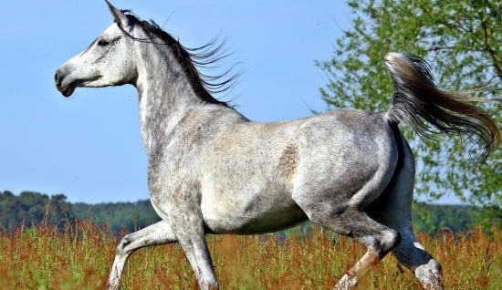

El Caballo Árabe es una de las razas más antiguas y elegantes del mundo, originaria de la península arábiga. Se caracteriza por su cabeza refinada, ojos grandes y expresivos, y gran resistencia física. Es un caballo inteligente, enérgico y muy versátil en deportes ecuestres y competiciones.